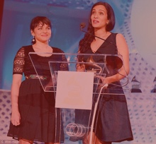

Anoushka began training on the sitar with her father Ravi at the age of seven. As part of her training, she began accompanying him on the tanpura at his performances from the age of ten, soaking up the music and becoming acclimated to the stage. Anoushka gave her first public sitar performance on 27 February 1995 at the age of 13, at Siri Fort in New Delhi as part of her father’s 75th birthday celebration concert.  For this solo debut, she was accompanied by tabla maestro Zakir Hussain. Her first experience in the recording studio came that same year when Angel Records released a special four-CD box set called In Celebration, to mark her father’s birthday. By the age of fourteen, she was accompanying her father at concerts around the world. At fifteen, she assisted her father on the landmark album Chants of India, produced by George Harrison. Under both their guidance, she was in charge of notation and eventually of conducting the performers who took part in the record. After this experience, the heads of Angel Records came to her parents' home to ask to sign her, and Anoushka signed her first exclusive recording contract with Angel Records (EMI) when she was sixteen. She released her first album, Anoushka, in 1998, followed by Anourag in 2000. In 1999 Shankar graduated from high school with honors, but decided against university in favour of beginning to tour as a solo artist. Both Shankar and her half-sister Norah Jones were nominated for Grammy awards in 2003 when Anoushka became the youngest-ever and first woman nominee in the World Music category for her third album, Live at Carnegie Hall. Having released three albums of Indian classical music, Anoushka took several years away from recording and focused her energy on establishing herself as a solo concert performer outside of her father’s ensemble. In that time, she toured worldwide, playing an average of 50–60 concerts per year. 2005 brought the release of her fourth album RISE, her first self-produced, self-composed, non-classical album, earning her another Grammy nomination in the Best Contemporary World Music category. In February 2006 she became the first Indian to play at the Grammy Awards, playing material from RISE.
On 29 November 2002, Shankar was the featured performer of the "Indian" half of the Concert for George, a posthumous tribute to the life and music of George Harrison, held at the Royal Albert Hall in London. She opened the show by playing a solo sitar instrumental titled "Your Eyes". Also on the sitar, she performed George Harrison's "The Inner Light" with Jeff Lynne. Lastly, she conducted a new composition, Arpan, written by her father. The composition featured Eric Clapton playing acoustic guitar, and a full orchestra of Indian and Western musicians. The concert was modelled after Ravi Shankar's benefit concert with Harrison, the 1971 Concert for Bangladesh.
Shankar was invited by Richard Gere and Philip Glass to perform in a concert at the Avery Fisher Hall in 2003 in aid of the Healing the Divide: A Concert for Peace and Reconciliation. Shankar and Jethro Tull postponed a concert scheduled for 29 November 2008 in Mumbai after the 2008 Mumbai attacks. They reorganised the performance as A Billion Hands Concert, a benefit performance for victims of the attacks, and held it on 5 December 2008. Shankar commented on this decision stating that: "As a musician, this is how I speak, how I express the anger within me [...] our entire tour has been changed by these events and even though the structure of the concert may remain the same, emotionally perhaps we are saying a lot more."[3]